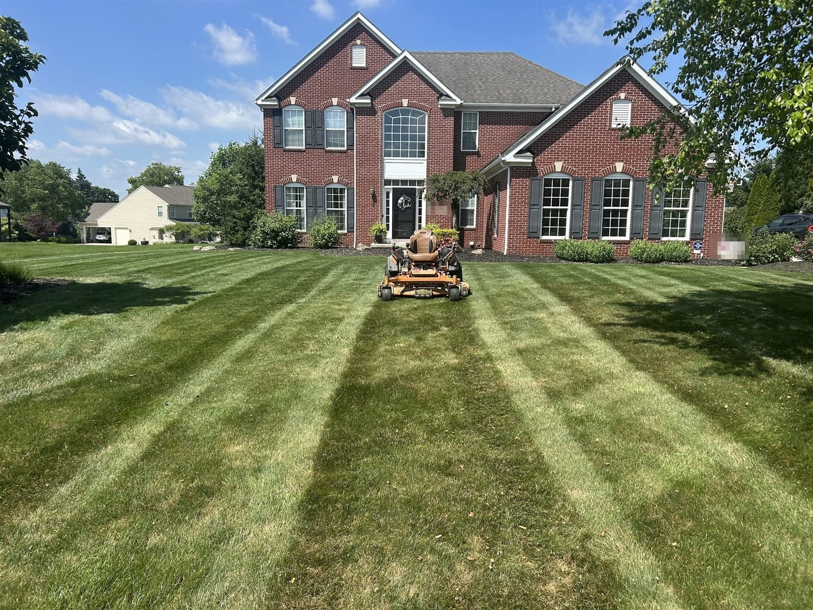
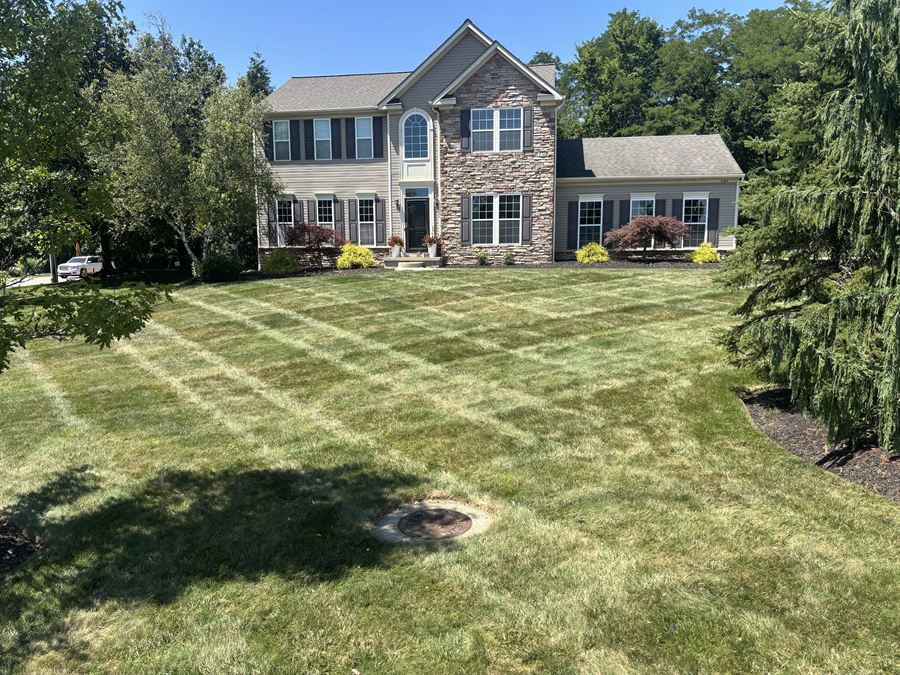
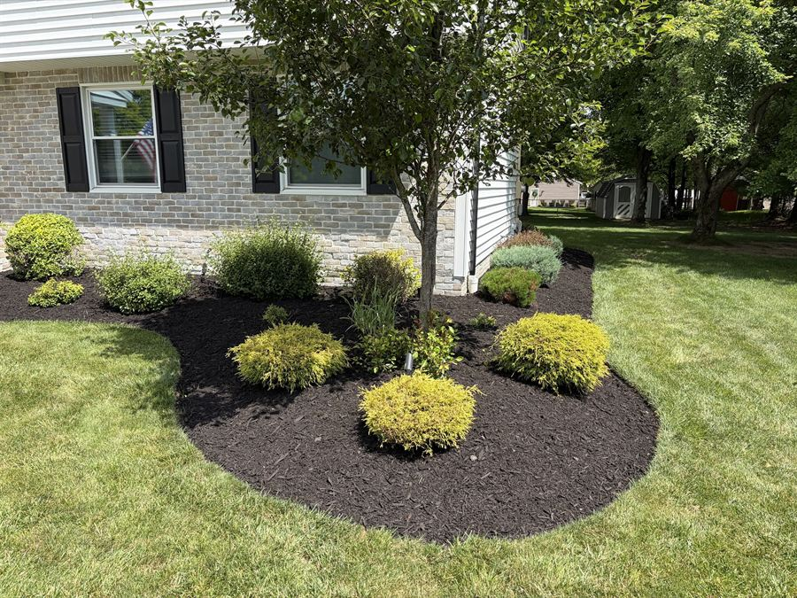
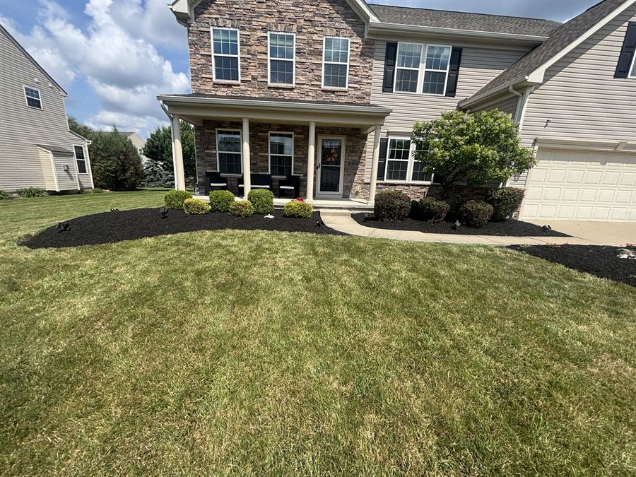

Weekly mowing
Harrison and his crew are doing a fantastic job of mowing our lawn! He is very prompt when responding to any questions and checks in with me to make sure I’m pleased with his work. Wonderful!

Summit County, Ohio
Grass 'n' Gardens is a Richfield company. Our crew starts here every morning at 6:30.
Richfield is home. We take care of 28 yards here, more than in any other town, so there's a good chance we're already on your street.
Good to know
Richfield's Service Department picks up brush and leaves. Here's how it works.
From the Village of Richfield website, read October 2026. Rules can change, so check there before you put anything at the curb.

Same day every week. We edge and blow off the drive every time.
See how it works
One price for the whole leaf season. We keep coming back till it's clear.
See the Fall Pass
We pull the weeds first. Then fresh mulch and a sharp edge.
See how it works
Try the screwdriver test. Packed soil? We fix it every fall.
Try the testMiss one? Text us. We're back the next day, for free. If it rains, the next dry day. Text (440) 667-9642
Harrison and his crew are doing a fantastic job of mowing our lawn! He is very prompt when responding to any questions and checks in with me to make sure I’m pleased with his work. Wonderful!
Questions
Don't see yours? Text Harrison. He texts back from his own phone.
Text HarrisonYes. Grass 'n' Gardens is based in Richfield, Ohio, and takes care of 28 yards in Richfield. Same crew, same day every week.
Yes. The Richfield Service Department picks up leaves in the fall as needed. There's no set schedule. Our Fall Pass is one price for the whole leaf season, and we keep coming back till it's clear.
It depends on your yard. Send us your address and Harrison looks your yard up on the map and texts you a price today. You don't have to be home. Get my yard plan
Yes. We also work in Broadview Heights, Brecksville, Bath, Hinckley, Granger, North Royalton, Akron and Medina.
I'll walk your yard and write out your whole year. Takes 20 minutes and you don't have to be home. You get it in a day and it's yours to keep, even if you stay with the guy you have now.
(440) 667-9642